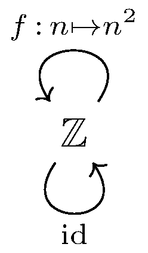

January 27th
Today I learned another (more) contrived example of a function which is both monic and epic but neither injective nor surjective, but now with only $1$ object. The cost of using $1$ object is that we must have infinitely many morphisms: as discussed yesterday, we must have more than one morphism because the identity "should'' be bijective, and adding a non-identity morphism $f$ adds $f^1,f^2,\ldots.$ If this (monoid structure) is finite, then $f^n=\op{id}$ for some $n,$ meaning that $f$ is not epic/monic.
So we should have infinitely many morphisms, and as such we're going to need an infinite set as our object. The following works.
Of course, we also have the induced morphisms $f^2,f^3,\ldots$ not shown in the above diagram, but these make up all of our morphisms. Quickly, this is a category: because all maps are $\ZZ\to\ZZ,$ our morphisms have well-defined composition, and this composition is associative because it is function composition. And the identity map fixes everyone, so $g\circ\op{id}=\op{id}\circ g=g$ for any $g\in\op{Mor}(\ZZ,\ZZ).$
We show now that $f$ is neither injective nor surjective. This is quick: $f(-1)=f(1)=1,$ so $f$ is not injective. And the image of $f$ is always nonnegative, so $f$ cannot be surjective.
It remains to show that $f$ is both epic and monic. By setting $f^0:=\op{id},$ we note that all of our morphisms have the form $f^\bullet,$ so the epic and monic conditions look like\[\begin{cases} f^n\circ f=f^m\circ f\implies f^n=f^m, \\ f\circ f^n=f\circ f^m\implies f^n=f^m.\end{cases}\]Both of these are saying $f^{n+1}=f^{m+1}$ implies $f^n=f^m.$ We remark that, for this, it's enough to say $f^n=f^m$ implies $n=m,$ for then\[f^{n+1}=f^{m+1}\implies n+1=m+1\implies n=m\implies f^n=f^m.\]
To show that $f^n=f^m$ implies $n=m,$ we note that $f\left(2^k\right)=2^{2k},$ so $f^n(2)=2^{2^n}$ (by induction). So from $f^n=f^m,$ we have\[2^{2^n}=f^n(2)=f^m(2)=2^{2^m}.\]Taking logarithms, for example, we conclude $n=m.$ This completes the proof.
We close with some remarks. Because our category only has the maps $f^\bullet,$ the epic and monic conditions degenerate quickly to just showing that our category is the free monoid on one letter. Typically, having this structure means that we're invertible (and therefore bijective), but our construction somewhat bypasses invertibility to just say that the functions are all distinct. The exact function $f(n)=n^2$ is merely chosen to be kind of fast while not injective to make the end of the proof work properly; $f(n)=\floor{n/2}$ over $\NN\to\NN$ also works.